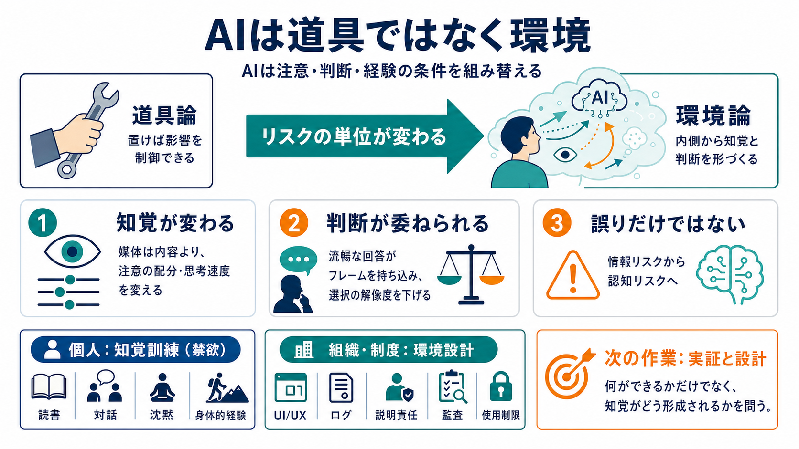

Your AI Is Not a Tool - by L. M. Sacasas
It is an environment, and you are in it. On this same point—that even careful, self-aware AI use can have unexpected and…

“使い方を賢くすれば中立で安全”という前提を疑い、AIが注意・判断・経験の条件そのものを組み替える点を問題にします。
Environment（環境）／Judgment（判断）
メディア・リテラシーだけでなく、知覚訓練（禁欲）へ
配慮して使っても、AIは利用者の内側に入り込み、気づかないうちに認知や判断の運用様式を変えうる、と著者は論じます。
持って置けば影響は制御できる
吸い込まれ、内側から“形づくる”
マクルーハンの発想を引き、媒体は情報の正誤以上に、知覚の比率（sense ratios）や認知のパターンを変えるとされます。
注意の配分・思考の速度・反論の仕方
誤情報対策だけでは不十分になる
AIを援助（研究者・家庭教師・編集者のように）として使っても、“自信に満ちた流暢なフレーム”が外側から入り込み、判断を委ねる方向に傾きうる、と論じます。
良否の見分けが弱まり、選択の解像度が下がる
配慮して使うほど変質が起きうる
著者は逸話を踏まえつつ、先行する会話・観察・批評に言及する一方、条件（AI種別、職種、使用量など）は本文だけでは特定できず、可能性として受け止め追加の実証が必要だと読み取れます。
害は単なる情報の誤りではなく、注意・判断・反論の枠組み（運用様式）そのものが変質する点にある、と位置づけられます。
誤情報・見落とし・誤解を減らす
判断力や関係性の“作動”が変わる
イリイチに沿って、最良の応答は情報の読み方以上に、知覚を鍛える（禁欲的アスケティックな訓練）方向にある、と提案されます。
デジタル刺激に吸い込まれる感覚（注意・経験）を取り戻す
読書・対話・沈黙・身体的経験の回復などを設計できる
個人の注意訓練に重心が寄りすぎると、影響を低減できる環境設計（UI/UX、ログ、ガバナンス等）の責任が弱まる恐れがある、と批判的に整理できます。
知覚訓練・慎重な運用・検討の習慣
評価指標・説明責任・使用制限・監査
強みは、AIの害を精神論や誤答管理だけに還元せず、経験の条件（知覚・判断・関係性）の形成過程として捉え直す点にあります。限界は、逸話的比喩に依存しやすく、具体策が未提示である点です。
この主張は「何ができるか」だけでなく「知覚がどう形成されるか」を問うため、実証研究・設計原則・教育カリキュラム・制度を分担して検討すべきだ、という結論になります。
媒体は“情報”より知覚の比率（sense ratios）を変える
内容よりも、認知パターンを作動させる条件に注目する。
道具の使い方では足りず、知覚そのものを鍛える
禁欲的（アスケティック）な訓練で、経験様式を回復する。
It is an environment, and you are in it. On this same point—that even careful, self-aware AI use can have unexpected and…
AI and other technological contrivances “tools” obscures proper understanding of their role & impact. AI is as a denial-…
In this wholehearted conversation, LM Sacasas talks about conviviality and the properties of convivial tools to empower …
## Stories of Platform Design. talks about conviviality and the properties of convivial tools to empower — not de-skill …
Research focused on the consequences of industrial production on society and early on it focused on what Illich called “…